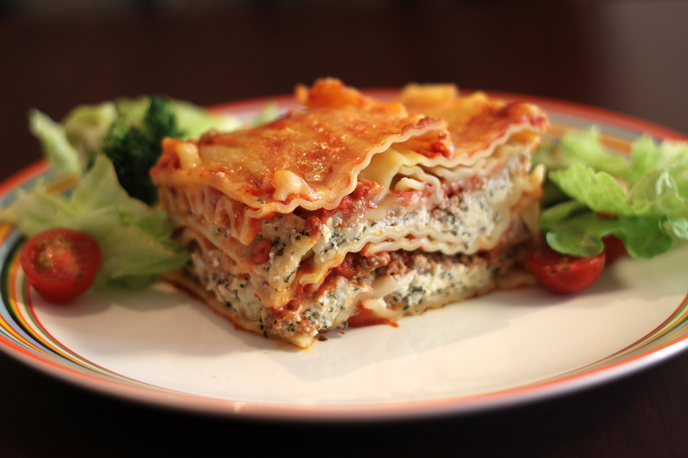

Home
Lasagna

Description
In Italian cuisine it is made of stacked layers of pasta alternating with fillings such as ragù (ground meats and tomato sauce), béchamel sauce,
vegetables, cheeses (which may include ricotta, mozzarella, and Parmesan), and seasonings and spices. The dish may be topped with grated cheese,
which melts during baking.
Ingredients
- 500g of ground beef
- 1 onion
- 2 cloves
- 2 carrots
- 1 celery stalk
- 400g tomato passata
- 2 tbsp olive oil
- Salt, pepper, dried oregano, and basil (for taste)
- 50g butter
- 50g all-purpose flour
- 500 ml whole milk
- 9-12 sheets of lasagna pasta
- 50 g grated Parmesan cheese
Steps
Make the meat Sauce
- Heat the olive oil: Warm a generous splash of olive oil in a large pan.
- Sauté the veggies: Add finely chopped onion, minced garlic, grated or diced carrots, and celery if using.
Sauté for about 5–7 minutes until soft.
- Brown the meat: Increase the heat and add the ground meat. Cook until the meat is fully browned and breaks apart.
- Deglaze with wine: Pour in the red wine (if using) and let it boil off until mostly evaporated.
- Add tomatoes: Stir in the passata and tomato paste. Mix well.
- Season: Add salt, pepper, oregano, and basil to taste.
- Simmer: Reduce the heat and let the sauce simmer for at least 30–60 minutes. The longer it cooks, the more intense the flavor—no shortcuts.
Prepare the Béchamel Sauce
- Make a roux: In a saucepan, melt the butter over medium heat. Stir in the flour and cook for 1–2 minutes, stirring constantly—it should form a smooth paste.
- Add milk gradually: Slowly whisk in the milk, ensuring there are no lumps. Keep stirring.
- Thicken and season: Continue stirring until the sauce thickens to a smooth consistency. Season with salt, white pepper, and a pinch of nutmeg.
- Set aside: Remove from heat once done.
Assemble the Lasagne in a Baking Dish
- First layer: Start with a thin layer of béchamel sauce at the bottom of your ovenproof dish.
- Layer pasta: Lay down a sheet of lasagne pasta.
- Layer meat sauce: Spread an even layer of meat sauce over the pasta.
- Top with béchamel: Drizzle some béchamel sauce on top of the meat sauce.
- Add cheese: Sprinkle shredded mozzarella and a bit of Parmesan.
- Repeat: Build up layers—pasta, meat sauce, béchamel, and cheese—until you’ve used all your ingredients (aim for 3–4 layers).
- Final touch: For the top, finish with a layer of pasta covered with béchamel and a generous amount of cheese.
Bake
- Preheat your oven: Set it to 180°C (350°F) using conventional heat (top and bottom).
- Bake: Place the dish in the oven and bake for approximately 35–40 minutes.
Optional finishing step: For a crisp, golden top, switch to the grill mode for the last 5-10 minutes
- Rest: Once out of the oven, let the lasagne rest for 10–15 minutes. This lets the layers set and makes cutting easier.